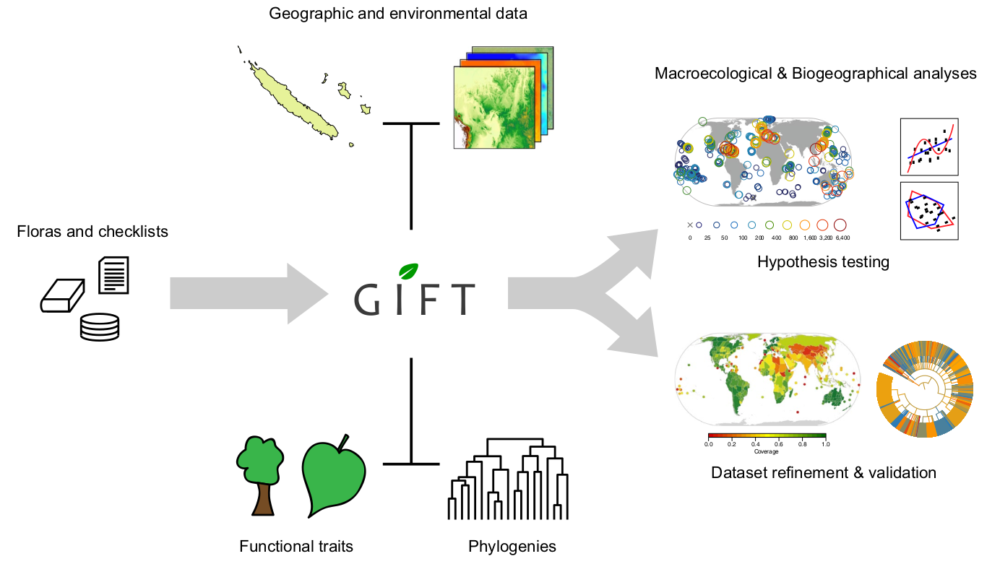

Biodiversity Databases
I have led and contributed to the development of multiple biodiversity databases. During my PhD, I was one of two main developers behind GIFT, the Global Inventory of Floras and Traits database. GIFT provides information on the geographical distribution and biological characteristics (functional traits) of more than 300.000 plant species worldwide. Geographical regions in GIFT, which range from small protected areas to entire countries, are processed using geostatistical methods to extract a variety of additional features, e.g. topographic, climatic or socioeconomic variables. GIFT is set up as MySQL database running on an Apache server, with the ETL pipeline written in R.
Other database projects I have contributed to with data or code TRY (plant functional traits), GloNAF (invasive species) and GRooT (root traits).
Further resources
-
GIFT homepage – Data browser and simple visualization features for parts of the data base.
-
Biodiversity data integration – Conceptual paper and case studies highlighting synergies biodiversity data integration.